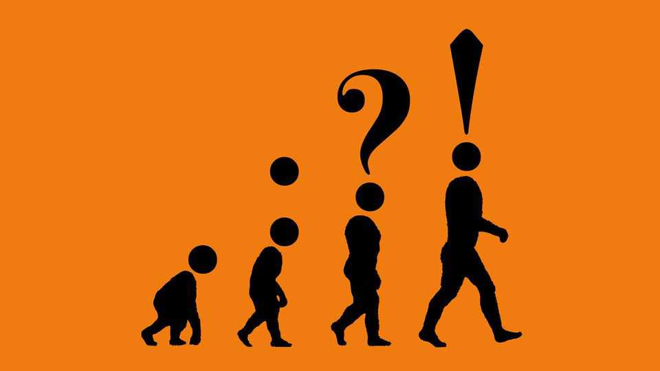

Punctuation matters more than you think
A new book offers a dashing history of writers’ marks

Aug 20th 2026
“In the beginning was the word, and the word was with God, and the word was God.” Yet in the beginning there was no punctuation. In early Latin manuscripts, the Bible was written in scriptura continua, without spaces or marks between words. This was a problem: pause at the wrong point, and you could sever God from “the word”, throwing Christ’s divinity into doubt. So in the Middle Ages, Christian scholars set about punctuating the holy book, using symbols and sub-clauses as “lanterns to words” to guide preachers.
“The history of punctuation is the history of humanity,” argues Florence Hazrat, a researcher, in a rollicking new book. Often dismissed as “the invisible ushers of the sentence”, dots and dashes have shaped religious texts, legal documents, and literature. “On the Mark”, like punctuation itself, makes readers pause for thought, showing how full stops have displeased and commas caused controversy.
This pointed history starts in the ancient world. Cicero, like other Roman scholars, thought punctuation was amateurish. For skilled orators, half the fun was in interpreting obscure writing. Ms Hazrat races across time—offering digressions about how, for instance, Irish monks in the eighth century first put spaces between words—before reaching the “punctuation boom” of the Renaissance. Scholars in Italy invented curved commas, semicolons and (do not forget) parentheses. The printing press helped spread and standardise these signs, and by around 1600 all the major marks were in place.
“On the Mark” is crammed with fascinating facts. Take the exclamation mark, about which Ms Hazrat wrote a previous book. Invented by an Italian poet in the 1360s to signal “admiration and wonder”, by the 19th century it had become a sign of emotion and even hysteria. Editors added them to old texts, including Shakespeare’s “Antony and Cleopatra”. (In the First Folio, the play had only 16 exclamation marks, but modern versions contain about 200, most of them clustered in Cleopatra’s shouty-sounding speeches.) In the 20th century the exclamation mark fell into “soundless cymbal-crashing”, as Theodor Adorno, a German philosopher, put it. Nazi propagandists aggressively attached clusters of them to the end of assertions!!!
Writers have long squabbled over scribbles. Emily Dickinson felt “defeated” when an editor cut a dash; Charles Baudelaire told his proofreader “I absolutely want to keep this comma.” Mark Twain even threatened to have a proofreader shot who dared change his punctuation. This is a delightful tale of marks’ evolution, even if Ms Hazrat’s own attempts to use them inventively fall a dash flat. ■